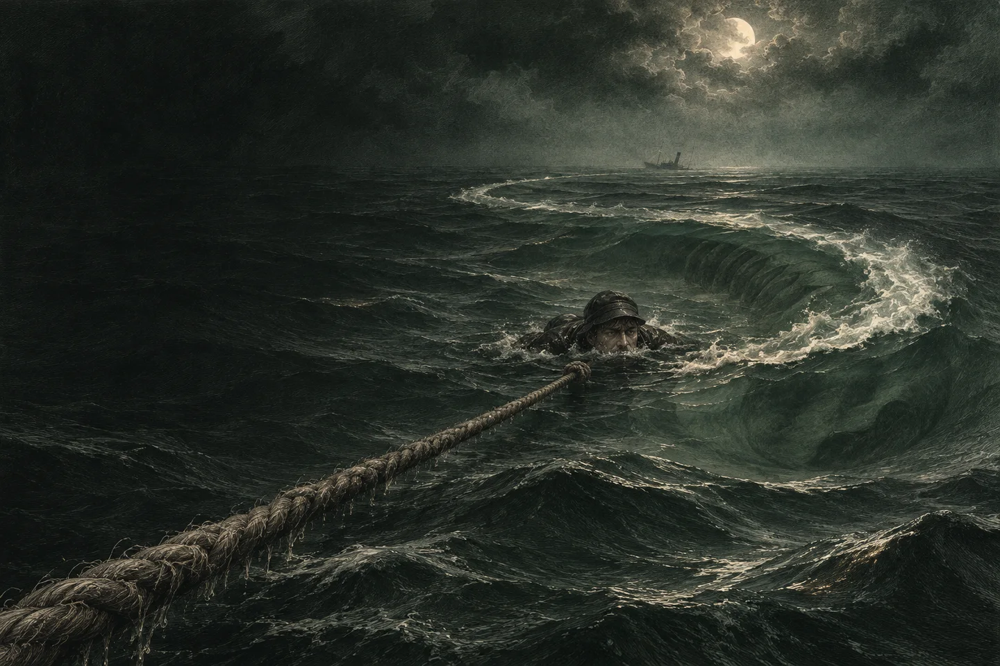
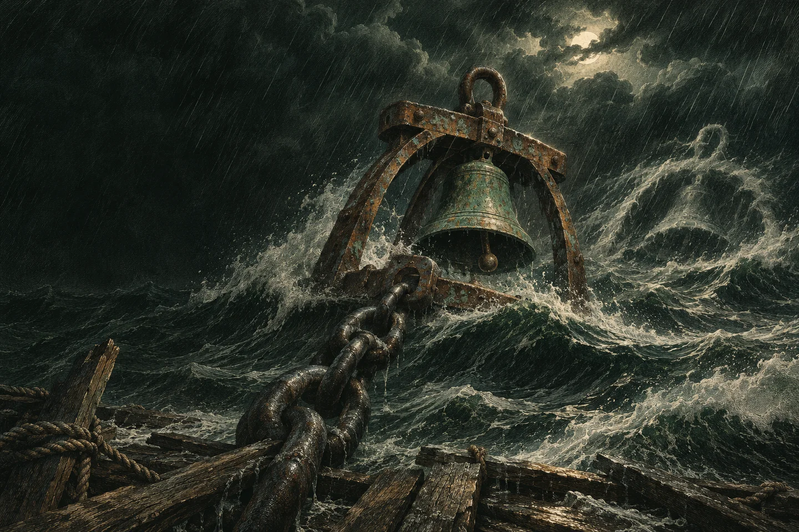

Select your raised signal again to lower it.


Share a private link with each friend.
Nell plays as a bot.
Drag a card here, or select a card and use this tray.
No entries yet.
Assign one swimmer and play one move per sailor in any order. The swimmer gains 2 cold and recovers 1 ration. Each sailor on the raft sheds 1 cold.
Spend a ration to remove 2 cold from anyone. Each brace blocks 1 hull damage this tide. The voyage ends if any sailor reaches 5 cold or the raft reaches 0 hull after the tide resolves.
Salvage adds two cards to the shared deck. Each sailor holds two. Play a card and draw its replacement. A crew action like Lash the timbers lets you keep both equipment cards. When the draw pile runs out, shuffle the discard pile.
On tide six, the swimmer can play Sounding line to mark a safe channel. On tide seven, that route spares the hull and adds no cold. The crew can also brace the raft or send the swimmer ahead.
During The second wake, a sailor on the raft can ring the Wreck bell. Haul in on the echo to spare the hull and give the swimmer only 1 cold from exposure. The swimmer still recovers 1 ration.
At The bell buoy, brace to feel the chain. Two knocks before the bell mark the true chain. Following it costs 1 extra cold and recovers 2 rations. If the bell rings first, following it costs 2 extra cold and recovers 1 ration. The swimmer also takes normal exposure.
Send each private link to the player who will control that sailor.